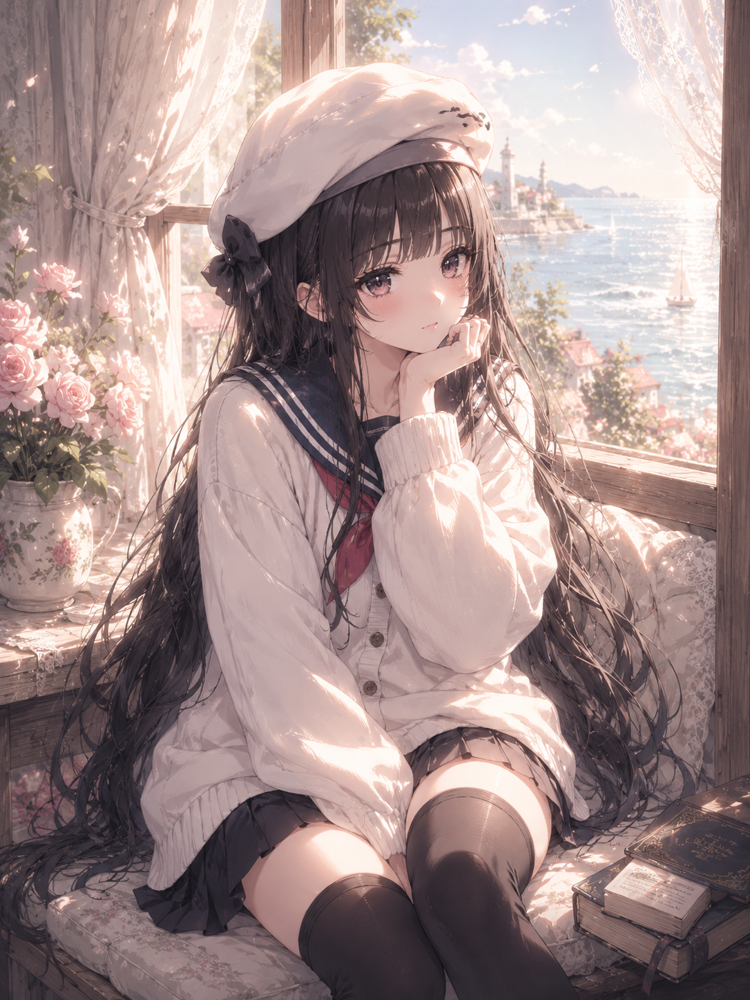

← Archive
0021
Positive Prompt
(masterpiece), (best quality), highly detailed anime illustration, beautiful young woman, soft innocent expression, large glossy eyes, subtle blush, delicate feminine face, fluffy eyelashes, soft glossy lips, light messy bun hairstyle, loose hair strands, airy bangs, natural feminine pose, resting chin on hand, looking at viewer quietly, light summer dress, thin shoulder straps, soft fabric folds, elegant casual fashion, gentle feminine silhouette, sitting beside an open seaside window, beautiful ocean background, peaceful beach scenery, coastal town atmosphere, blooming flowers near window, bright natural sunlight, sparkling sea reflections, soft breeze, dreamy summer mood, calm slice of life atmosphere, soft pastel aesthetic, watercolor-like shading, painterly anime rendering, thin clean lineart, soft lighting, airy composition, delicate highlights, nostalgic emotional atmosphere, pixiv featured artwork, Japanese illustrator aesthetic, shoujo manga vibe, modern anime style, Korean webtoon atmosphere, light novel illustration style, soft brush rendering, romantic summer illustration, artstation quality
Negative Prompt
negative prompt: (low quality, blurry, bad anatomy, extra fingers, extra limbs, malformed hands, poorly drawn face, duplicated features, rough sketch, heavy shadows, watermark, logo, text, jpeg artifacts, realistic photo, 3d rendering)
Positive Prompt (masterpiece), (best quality), highly detailed anime illustration, beautiful young woman, soft innocent expression, large glossy eyes, subtle blush, delicate feminine face, fluffy eyelashes, soft glossy lips, light messy bun hairstyle, loose hair strands, airy bangs, natural feminine pose, resting chin on hand, looking at viewer quietly, light summer dress, thin shoulder straps, soft fabric folds, elegant casual fashion, gentle feminine silhouette, sitting beside an open seaside window, beautiful ocean background, peaceful beach scenery, coastal town atmosphere, blooming flowers near window, bright natural sunlight, sparkling sea reflections, soft breeze, dreamy summer mood, calm slice of life atmosphere, soft pastel aesthetic, watercolor-like shading, painterly anime rendering, thin clean lineart, soft lighting, airy composition, delicate highlights, nostalgic emotional atmosphere, pixiv featured artwork, Japanese illustrator aesthetic, shoujo manga vibe, modern anime style, Korean webtoon atmosphere, light novel illustration style, soft brush rendering, romantic summer illustration, artstation quality Negative Prompt negative prompt: (low quality, blurry, bad anatomy, extra fingers, extra limbs, malformed hands, poorly drawn face, duplicated features, rough sketch, heavy shadows, watermark, logo, text, jpeg artifacts, realistic photo, 3d rendering)